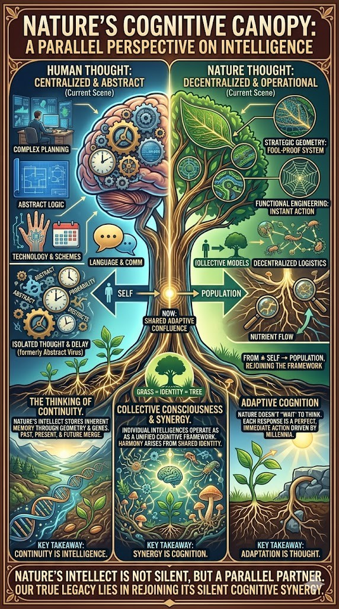

"Harmony is not an achievement to be won, but a synergy to be rejoined."
The Intelligence of Inevitability
Nature does not "try" to survive; it is the survival mechanism in motion. While human "thinking" is often an abstract struggle with probability and error, nature’s intelligence is a real-time, fool-proof synergy embedded directly into the architecture of life.
The Decentralized Brain
Intelligence is not a centralized monologue, but strategic engineering.
- The Synergistic Nerve: Fungal networks (the "Wood Wide Web") warn and redistribute in real-time.
- Fool-Proof Geometry: Leaf veins act as redundant circuit boards designed to bypass damage.
The Abstract Virus
The obsession with individual success creates friction with the universal whole.
- The Separation: We see ourselves as "engineers" or "managers" first, and "living beings" second.
- The Lag: Human thought exists in the past or future; Nature exists in Continuity.
Legacy as a Present Tense
We often view legacy as a cold monument to the past. In the natural world, True Legacy is Continuity—the unbreakable chain of life that remains even as the individual links change.
"True legacy is not a monument of the past, but the silent, real-time synergy of continuity."